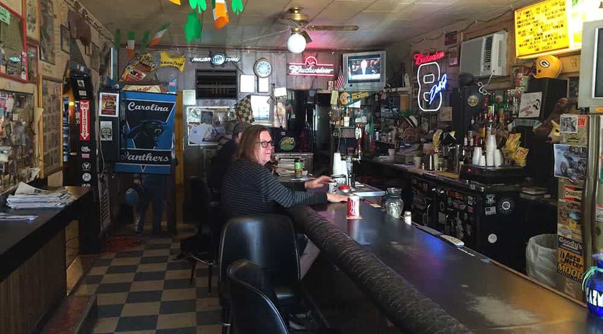

Daryush "Roosh" Valizadeh created ROK in October 2012. You can visit his blog at RooshV.com or follow him on Twitter and Facebook.


The following article was originally published on Roosh V.
Upon setting a goal, you fantasize about the pleasure you’ll receive from accomplishing it. The problem is that only a tiny percentage of your overall time is spent enjoying the actual goal. Instead, most of your efforts go into the tasks towards achieving it. The work you do for the goal becomes your life, not the goal itself.
Let’s say a man wants to get into game because he wants sex. He’s a night person so he decides to meet girls at bars. He imagines all the drunk sluts he will sleep with. Even if his game is good, most of his time will be spent at the bars drinking alcohol while a tiny percentage will be spent in actual fornication. His life is not one of sex, but of going to bars.

An obese career woman sits all day at work and binges on junk food at night. She is starting to have back and knee pain. She imagines being thin, more beautiful, and free of pain, so she goes vegan and signs up for Crossfit. Her life now becomes that of veganism and Crossfit, which will dominate her free time. Even when she hits her health goal, she will spend that renewed health to continue being a vegan while doing Crossfit instead of just being healthy in isolation.
Fame works the same way. You work so hard to achieve a goal of receiving adoration from the masses, but your lifestyle becomes one of self-promotion and using Twitter, Instagram, and Facebook. You’re forced to spend hours a day referring to yourself in a positive manner instead of receiving the love that you imagined.
Whatever you do to achieve a goal becomes your lifestyle. The goal is the dessert, the 1% reward from your efforts, but there is the 99% that you must continually do to maintain the goal. Are you ready to labor and obsess over trivial activities so that you can reach your “dreams”? Because that’s the price you must pay when you set goals. You’re trained in the West to believe that things are “worth it in the end,” but most of the time it’s not. The goal is a way to keep you busy and distracted.
As I mentioned before, the best goal is one where you enjoy the entire process. Merely craving the end goal will not be enough. A lot of men want to get laid with beautiful women, but they can’t maintain continuous effort of hunting for them on the streets or bars. A lot of men want big muscles, but they can’t maintain a continuous program of working out in the gym or watching their diet. If these men set goals around sex or muscles, they will fail. I have a goal to finish books, and since I like the process of writing, my goal is an inevitable conclusion of what I like doing, which means I’m likely to succeed.
A man with multiple goals is stretched too thin, because all of his energy and willpower is being used to maintain multiple lifestyles. He thinks the more goals the better, because then he will reach his potential and enjoy the fruits of life, but those fruits are such a tiny percentage of his overall goal work that he’s slowly burning himself out doing things he doesn’t feel passionate about. Set a goal, but understand what lifestyle you’ll be forced to inherit while you try to achieve it.
Read Next: “When The Shoe Fits” By Osho Is A Deep Introduction To Tao